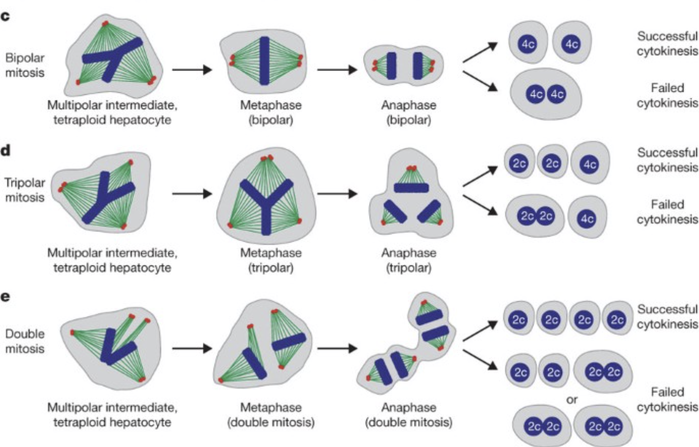

Continue to read the draft.
Log in and become a supporter to read the full article.
Become a supporter to read the full article.
Log in and become a supporter to read the full article.
Become a supporter to read the full article.
I.
Most of the intracellular wear and tear the cells accumulate over time can be naively mitigated by just having cells proliferate away the damage. Weak cells die out, unaffected cells out-proliferate and replace them, all is good again. The CTVT cell line has been continuously proliferating for thousands of years in this manner.
But having ability to proliferate is also very risky. Proliferative licensing is tightly rationed to specific cell types and contexts, because uncontrolled proliferation is the first step to cancer.
When I look at how multicellular organisms manage proliferation in somatic tissues, I see three broad strategies.
Under tumor suppressor theory of aging, you might expect that the liver would age faster than the “boiling soma” and “frozen soma” organs.
The logic goes like this:
But in reality, liver is degenerating slower over time than some other organs.
So what’s going on here?
II.
As I’m writing this, I don’t know the answer yet. But some hypotheses come to mind that might be a good starting point
Basics of liver anatomy
{write 5 paragraphs of anatomical and histological detail}
Hepatostat feedback
{write 5 paragraphs of molecular control feedback loop detail}
Polyploidy as a proliferation regulator
{write 5 paragraphs about how liver cell lineages have semi-finite length, as opposed to stem cell niches, ploidy conveyor model}

Frozen soma has long-lived differentiated cells. Boiling soma has long-lived stem cell niche cells. But liquid soma doesn’t have long-lived cells at all! Hepatocytes are under a continuous turnover, and the average replacement time seems to be around 3 years, in both young and old people.
Virtually all new hepatocytes come from preexisting hepatocytes via self-duplication, not from facultative stem/progenitor cells. (Yanger, K., Knigin, D., Zong, Y., Maggs, L., Gu, G., Akiyama, H., Pikarsky, E., & Stanger, B. Z. (2014). Adult Hepatocytes Are Generated by Self-Duplication Rather than Stem Cell Differentiation. Cell Stem Cell, 15(3), 340–349. https://doi.org/10.1016/j.stem.2014.06.003)
Why is it designed like that? One speculation is that the lack of a long-lived cell niche is helpful when you’re doing work in the body’s toxic waste dump. This makes it so that no privileged lineage can keep accumulating oncogenic mutations for very long.
So what happens once the cheater cells do accumulate in the liver with age?
Iakova et al. (2003) showed that old livers switch their growth arrest pathways: young livers use C/EBPα-mediated cdk inhibition, but old livers switch to a C/EBPα-Rb-E2F4 complex that directly represses E2F target genes like c-myc [13]. This causes a loss of proliferative response after partial hepatectomy in old animals. So the liver does eventually gradually implement an age-dependent degenerative brake on proliferation.
Functional compensation also occurs through cellular hypertrophy (cell enlargement) rather than hyperplasia. This preserves organ function without requiring cell division, bypassing the cheater problem entirely.
So the liver’s “proliferative permissiveness” is an illusion at the single-cell level. Most hepatocytes are polyploid and cannot divide cleanly. Those few that are division-competent are under constant immune surveillance. And with age, the proliferative machinery is actively dismantled. The tissue-level capacity for regeneration exists, but it is achieved by a small fraction of cells operating under heavy constraints — very different from the picture of a permissive, high-risk environment.
III.
Basically, a toxin-clearing organ can’t have the architecture of a frozen soma type, since the wear and tear pressure would gradually cull the non-dividing cellular population.
And it can’t have the architecture of a boiling soma type, since it’s a highly spiky mutagenic pressure that would break the proliferation locks on any “privileged” cell niche.
So the design that works is the liquid soma one: conditional regeneration by a few lucky cells at a time, neither of which can secure the dynasty.
Here’s what chatgpt says:
The liver is not immortal. It loses volume, blood flow, drug-metabolism capacity, bile handling, and regenerative speed with age. But compared with blood/immune system, skin, gut, skeletal muscle, kidney, ovary/testis, thymus, and probably pancreas, its fold-collapse in useful function is unusually small. Older donor livers regenerate worse than young donor livers, but not catastrophically: in one 2025 living-donor hepatectomy cohort, younger donors recovered about 95.8% of original liver volume by 6 months, while donors ≥55 averaged about 87.9%. That is impaired, but the ratio is not “organ system fell off a cliff.” (astr.or.kr)
The crude ranking I would use is:
Slowest functional/proliferative aging: liver.
Functionally protected but proliferatively dead: brain and heart.
Fast obvious decline: ovary/testis, thymus, immune/hematopoietic system, skeletal muscle satellite-cell system, kidney reserve, skin/gut barrier renewal under stress.
The liver’s trick is that it does not rely mainly on a tiny immortal stem-cell pool to keep itself going. Mature hepatocytes are differentiated, metabolically competent cells that can sit quiescent for years and then re-enter the cell cycle when tissue mass is lost. That is different from intestine or blood, where you are constantly running high-throughput stem/progenitor logistics and therefore paying the accumulated costs of stem-cell exhaustion, niche remodeling, clonal selection, inflammation, telomere attrition, and epigenetic drift every day. The liver is more like a warehouse full of competent adults who can be drafted during a crisis; the gut is more like a factory line that never stops and eventually the union, machines, floor manager, and supply chain all become weird.
The core molecular architecture is:
1. Quiescent differentiated hepatocytes retain cell-cycle competence.
After partial hepatectomy, hepatocytes do not need to dedifferentiate into some embryonic fantasy creature. They are “primed” by inflammatory and growth-factor signals, enter G1, replicate, and restore mass. Human data show early liver regeneration is already measurable in the first week after hepatectomy; in one HCC hepatectomy study, age was inversely correlated with the early regeneration index, but regeneration still occurred, and the mean early regeneration index was about 57%. (Sage Journals)
2. The liver has huge reserve capacity.
Aging reduces liver volume, blood flow, metabolism, and regenerative response, but ordinary liver function is often well maintained in old age unless you add steatosis, fibrosis, alcohol, viral hepatitis, cholestasis, cancer, cachexia, or polypharmacy. Reviews describe decreased liver volume, blood flow, drug metabolism, and regeneration with age, while also noting that baseline function can remain relatively preserved. (PMC)
3. Regeneration is distributed across mature parenchyma, not bottlenecked through one fragile stem-cell niche.
In normal acute injury or resection, hepatocytes do most of the work. Ductular/progenitor-like programmes become more relevant when hepatocyte proliferation is blocked or injury is chronic. This matters because “one exhausted stem-cell hierarchy fails” is a much more brittle architecture than “many mature cells retain facultative proliferative competence.”
4. Liver regeneration is a coordinated cytokine/growth-factor/metabolic programme.
The usual spine is TNF/NF-κB and IL-6/STAT3 priming; HGF/MET and EGF/EGFR mitogenic drive; Wnt/β-catenin, Hippo/YAP, Notch, Hedgehog, TGF-β, PI3K-AKT as context-dependent control layers; then termination by antiproliferative and architectural feedback. A 2025 review frames liver repair/regeneration as coordinated signalling plus metabolic reprogramming, including Wnt/β-catenin, Hippo/YAP, Notch, Hedgehog, TGF-β, PI3K-AKT, TNF-α and IL-6 pathways. (Nature)
5. Metabolic plasticity is part of the regenerative engine.
After resection/injury, the remnant liver reallocates glucose, lipid, amino-acid, bile-acid, and mitochondrial metabolism to support proliferation. This is not decorative “metabolism is important” filler. Cell cycle entry needs ATP, NADPH, nucleotide synthesis, membrane synthesis, redox buffering, and methyl-group bookkeeping. The liver is already the body’s metabolic switchboard, so it has unusually good local infrastructure for this transition. The same 2025 review explicitly links regeneration to metabolic reprogramming and notes that hypoglycaemia after partial hepatectomy can promote Cyclin D1 and early G1 progression, while glucose supplementation can raise p21/p27 and reduce FOXM1. (Nature)
6. The age-related brake is real, and it is partly epigenetic/cell-cycle suppressive.
The aging liver accumulates anti-proliferative chromatin states. The famous Timchenko-axis version: C/EBPα becomes hyperphosphorylated, forms complexes with Brm, HDAC1, and HP1α, and represses E2F-dependent promoters. In plain English: old hepatocytes are not mostly “out of parts”; they are increasingly locked behind chromatin-level anti-cell-cycle bureaucracy. JCI describes aged liver hyperphosphorylating C/EBPα at S193, increasing C/EBPα–Brm complexes that repress E2F-dependent promoters and inhibit liver proliferation; C/EBPα–HDAC1–HP1α interaction is described as a key event in old-mouse liver proliferation inhibition. (JCI)
7. FOXM1 is one of the escape hatches.
FOXM1 is a cell-cycle transcription factor needed for hepatocyte DNA replication and mitosis. Older regenerating liver tends to have weaker induction of proliferative transcriptional programmes. In the human hepatectomy study, preoperative FXR and FOXM1 mRNA did not predict regeneration, but the authors note animal work where increased hepatocyte FOXM1 in elderly mice stimulated DNA replication and mitosis to young-like levels; the likely issue is dynamic induction after injury, not baseline transcript level. (Sage Journals)
8. The liver’s slow aging is entangled with cancer suppression.
This is where your tumor-suppressor-theory-of-aging instincts are useful. The liver retains regenerative competence, but old liver simultaneously installs anti-proliferative brakes: C/EBPα, E2F repression, p21/p27, senescence-like states, TGF-β, immune surveillance. These brakes reduce runaway clonal expansion but slow repair. Then cancer finds routes around them: gankyrin/proteasome-mediated degradation of phosphorylated C/EBPα, p53/RB pathway erosion, telomerase reactivation, Wnt/β-catenin mutations, TERT promoter mutations, chronic inflammatory niche selection. The JCI paper is almost comically relevant: C/EBPα phosphorylation suppresses liver proliferation, but liver cancer can degrade the active growth-inhibitory C/EBPα isoform through gankyrin/ubiquitin-proteasome routes. (JCI)
So the short mechanistic thesis is:
The liver ages slowly because its normal adult maintenance is low-turnover and high-reserve, while its emergency repair system uses mature hepatocytes that retain facultative proliferative competence. Aging mostly adds epigenetic and systemic brakes to cell-cycle re-entry rather than deleting the whole regenerative apparatus.
The more tumor-suppressor-theory version:
Liver is the organ that best preserves the old multicellular compromise: enough proliferative competence to rebuild mass after injury, enough quiescence and chromatin braking to avoid being a perpetual hepatocellular carcinoma machine. With age, the brake gradually wins. In cancer, clones learn to cut the brake cable.
Log in and become a supporter to read the full article.
Become a supporter to read the full article.